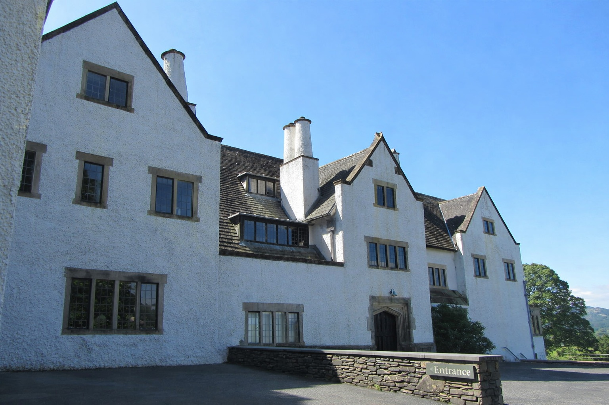
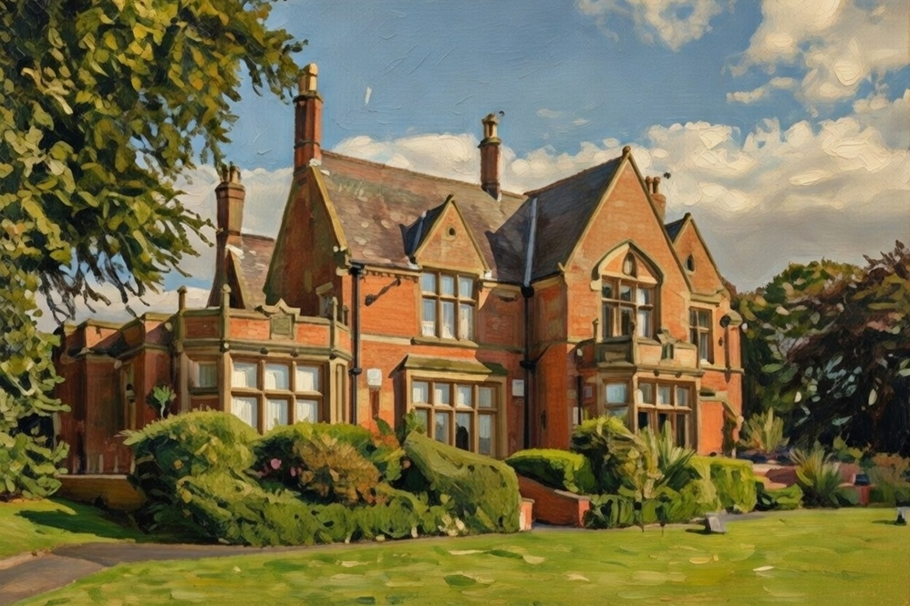

Holmacre Edge Alderley Edge
Holmacre Edge (also spelled Holmacre or Holm Acre) was the family seat and primary residence of Sir Edward Holt,
Baronet (1849–1928), the prominent Manchester brewer who headed Joseph Holt's Brewery from 1882 until his death.
Located on Congleton Road in Alderley Edge, Cheshire (near Manchester), it served as his main home during his career
as a wealthy industrialist, philanthropist, twice Lord Mayor of Manchester (1907–1909), and civic leader. The property
was a substantial Victorian/Edwardian house typical of affluent industrial families in the Cheshire
countryside, offering a retreat from urban Manchester life while remaining conveniently close for business.

Sir Edward, created a baronet of Cheetham in 1916, lived at Holmacre Edge with his family; it is noted in genealogical records as his seat. While his most famous property is Blackwell, the iconic Arts and Crafts holiday home on Windermere (built 1898–1901 as a summer retreat), Holmacre Edge was his everyday residence in the Manchester area. The house appears in historical directories and family lineages tied to the Holt of Cheetham baronetcy line.
Joseph Holt Brewery's official history and related timelines indicate that his primary lifelong residence from 1884 onward was Woodthorpe, a large Victorian house in Prestwich (near Manchester), where he moved with his wife Elizabeth and family after taking over the brewery in 1882. He remained there for the rest of his life until his death in 1928 at Manchester Royal Infirmary.Modern Location - Blackwell, The Arts & Crafts House
Bowness-on-Windermere, Cumbria LA23 3JT
Interactive map showing the modern location of the historic Holt property. Zoom and drag to explore.
Modern Location – Woodthorpe Hotel
Bury Old Road, Prestwich, Manchester M25 0EG
Interactive map showing the modern location of the historic Holt property. Zoom and drag to explore.